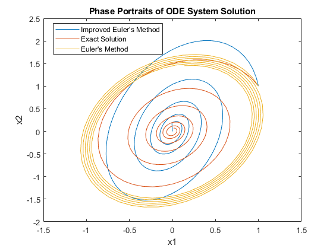

Systems Lab: Systems of ODEs in MATLAB
In this lab, you will write your own ODE system solver for the Heun method (aka the Improved Euler method), and compare its results to those of ode45.
You will also learn how to save images in MATLAB.
Opening the m-file lab4.m in the MATLAB editor, step through each part using cell mode to see the results. Compare the output with the PDF, which was generated from this m-file.
There are four (4) exercises in this lab that are to be handed in on the due date of the lab. Write your solutions in a separate file, including appropriate descriptions in each step. Save the m-files and the pdf-file for Exercise 4 and submit them on Quercus.
Contents
Student Information
Student Name: Linda Zhao
Student Number: 1008107683
Exercise 1
Objective: Write your own ODE system solver using the Heun/Improved Euler Method and compare it to ode45.
Details: Consider the system of 2 ODEs:
x1'=f(t,x1,x2), x2'=g(t,x1,x2)
This m-file should be a function which accepts as variables (t0,tN,x0,h), where t0 and tN are the start and end points of the interval on which to solve the ODE, h is the stepsize, and x0 is a vector for the initial condition of the system of ODEs x(t0)=x0. Name the function solvesystem_<UTORid>.m (Substitute your UTORid for UTORid). You may also want to pass the functions into the ODE the way ode45 does (check MATLAB labs 2 and 3).
Your m-file should return a row vector of times and a matrix of approximate solution values (the first row has the approximation for x1 and the second row has the approximation for x2).
Note: you will need to use a loop to do this exercise. You will also need to recall the Heun/Improved Euler algorithm learned in lectures.
Exercise 2
Objective: Compare Heun with an exact solution
Details: Consider the system of ODEs
x1' = x1/2 - 2*x2, x2' = 5*x1 - x2
with initial condition x(0)=(1,1).
Use your method from Exercise 1 to approximate the solution from t=0 to t=4*pi with step size h=0.05.
Compute the exact solution (by hand) and plot both phase portraits on the same figure for comparison.
Your submission should show the construction of the inline function, the use of your Heun's method to obtain the solution, a construction of the exact solution, and a plot showing both. In the comments, include the exact solution.
Label your axes and include a legend.
% ====================================================================== % Exercise 2 Submission % ====================================================================== % Define inline functions f = @(t,x1,x2) x1/2 - 2*x2; g = @(t,x1,x2) 5*x1 - x2; % Define all function variables (initial conditions, time interval, step size) x0 = [1;1]; t0 = 0; tN = 4*pi; h = 0.05; % Estimate ODE soln using Heun method [soln_t, soln_X] = solvesystem_zhaoli50(f, g, t0, tN, x0, h); % Exact solution t = linspace(t0, tN, 250); sq = sqrt(151); % Term appears a lot in the solution, make variable for simplification x1_exact = exp(-t/4) .* ((3/20)*cos(sq/4*t)-(sq/20)*sin(sq/4*t)) + (17/sq)*exp(-t/4) .* ((3/20)*sin(sq/4*t) + (sq/20)*cos(sq/4*t)); x2_exact = exp(-t/4) .* cos(sq/4*t) + (17/sq).*exp(-t/4) .* sin(sq/4*t); % Plot phase portraits plot(soln_X(1,:), soln_X(2,:), x1_exact, x2_exact); xlabel('x1'); ylabel('x2'); title("Phase Portraits of ODE System Solution") legend("Improved Euler's Method", "Exact Solution", 'Location', 'Best') % ======================================================================
Exercise 3
Objective: Compare your method with Euler's Method (from iode).
Details: Use iode to plot the solution for the same problem with the same step size as on Exercise 2.
Compare your solution on exercise 2, the exact solution from exercise 2 and the approximation using Euler's method. Plot the solution for Euler's method and make note of any differences.
% ====================================================================== % Exercise 3 Submission % ====================================================================== % Define inline functions as vector for iode fs = @(t,x) [x(1)/2 - 2*x(2); 5*x(1) - x(2)]; % Initial condition, t vector x0 = [1;1]; tc = 0:0.05:4*pi; % Solve using iode X_euler = euler(fs, x0, tc); % Plot results plot(soln_X(1,:), soln_X(2,:), x1_exact, x2_exact, X_euler(1,:), X_euler(2,:)); xlabel('x1'); ylabel('x2'); title("Phase Portraits of ODE System Solution") legend("Improved Euler's Method", "Exact Solution", "Euler's Method", 'Location', 'Best') % ======================================================================
Saving Images in MATLAB
To do the following exercises, you will need to know how to output graphics from MATLAB. Create a folder on your Desktop (or elsewhere) to contain the files generated by these exercises. Make this folder the "Current Folder" in the left side of the main MATLAB window. This will ensure that the files output by MATLAB end up in the folder you created.
To save an image of a phase portrait, use the following steps:
1. Get the phase portrait looking the way you want in the iode window.
2. Leaving iode open, switch to the main MATLAB window.
3. Type the command print -dpng -r300 'filename.png' in the command window.
This command will create a PNG graphic called filename.png in the current folder. The -dpng option tells MATLAB to output the graphic in PNG format; MATLAB also allows output in other formats, such as BMP, EPS, PNG and SVG. The -r300 option tells MATLAB to set the resolution at 300 dots per inch and can be adjusted if you wish.
Exercise 4
Objective: Analyze phase portraits.
Details: Compile the results of the following exercises into a single document (e.g. using a word processor) and export it to PDF for submission on Quercus.
For each of the first-order systems of ODEs 4.1 to 4.10 below, do the following exercises:
(a) Generate a phase portrait for the system (centre the graph on the equilibrium point at (0,0)). Include a few trajectories.
(b) Classify the equilibrium on asymptotic stability, and behaviour (sink, source, saddle-point, spiral, center, proper node, improper node) - check table 3.5.1 and figure 3.5.7. Classify also as for clockwise or counterclockwise movement, when relevant.
(c) Compute the eigenvalues of the matrix (you do not need to show your calculations). Using the eigenvalues you computed, justify part (b).
To avoid numerical error, you should use Runge-Kutta solver with a step size of 0.05. Change the display parameters, if necessary, to best understand the phase portrait.
4.1. dx/dt = [2 1; 1 3] x
4.2. dx/dt = [-2 -1; -1 -3] x
4.3. dx/dt = [-4 -6; 3 5] x
4.4. dx/dt = [4 6; -3 -5] x
4.5. dx/dt = [0 -1; 1 -1] x
4.6. dx/dt = [0 1; -1 1] x
4.7. dx/dt = [2 8; -1 -2] x
4.8. dx/dt = [-2 -8; 1 2] x
4.9. dx/dt = [-8 5; -13 8] x
4.10. dx/dt = [8 -5; 13 -8] x ====================================================================== Exercise 4 Submission ====================================================================== Parts a - c are all included on the submitted PDF file (titled "MAT292 Lab 4 - Exercise 4 [zhaoli50].pdf") ======================================================================